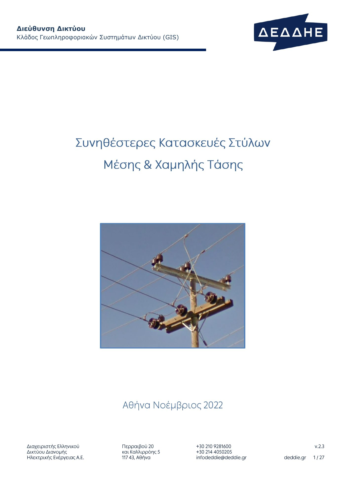

Επιλογή Παροχής ΧΤ – επιλέξτε εργασία από τα εικονίδια ή γράψτε στην αναζήτηση (καρτέλα, κωδικό ΕΤΚΔ, κατασκευή, ΜΔ, κανόνα, απόσταση ασφαλείας). Από κάθε καρτέλα η επιστροφή γίνεται με το «‹ Αρχική». Οι κανόνες και οι επεξηγήσεις των οδηγιών ανοίγουν με drop-down.
Βοήθημα μελέτης – η τελική ευθύνη ανήκει στον μελετητή · COPYRIGHT © Δημήτρης Βρούβας (φιλική συμμετοχή Αθηνά)
1 Στοιχεία έργου
Καλώδιο παροχής – διατομή
—
Συμπληρώστε τις παροχές (2) – η διατομή ενημερώνεται αυτόματα.
2 Παροχές – πλήθος μετρητών & φορτία
Φορτία ανά παροχή (κίτρινα): κανόνες γραφείου – Νο 03 = 32, Νο 05 = 50, Νο 1 = 25, Νο 2 = 35, Νο 3 = 50, Νο 4 = 80, Νο 5 = 125, Νο 6 = 215, Νο 7 = 315 A.
3 Δίκτυο, είδος παροχής & εγκατάσταση
4 Βάση εντάσεων, συνθήκες (ΟΔ.26) & τυποποιήσεις
ΑΠΟΤΕΛΕΣΜΑ
—
5 Φορτίο μετρητικής διάταξης (ΟΔ.22 §11.2 · ΟΔ.45 §1 & Πίν. ΙΙ)
6 Είδος παροχής (ΟΔ.45 §4)
7 Πίνακας επιλογής – I_z' για κάθε τρόπο εγκατάστασης
ΝΑΙ = επαρκεί για I_req · ΟΧΙ = ανεπαρκές · — = δεν εφαρμόζεται. Γαλάζιο = επιλεγμένο καλώδιο για την εφαρμοστέα περίπτωση. Τιμές ΟΔ.26 3η έκδ. 07/2025 – Πίν. V (συγκεντρικά EPR-SE1: έδαφος / αέρα ελεύθερα / επιτοίχια / σωλήνα > 6 m) και Πίν. IV (XLPE) × συντελεστές ΟΔ.26 (Πίν. VIII θερμοκρασίες, XIII έδαφος, XIV χαντάκι, XVI σωλήνες – με τις προεπιλογές = 1,00, δηλ. οι τιμές της ΟΔ.26 αυτούσιες).
8 Αυτόματη επιλογή ανά τρόπο εγκατάστασης
9 Άνοιγμα L – στυλίσκος παροχής ή γάντζος (κανόνες γραφείου & ΔΕΗ CS-3)
9β Απαιτούμενος Μ/Σ & ασφάλεια αναχώρησης από το πλήθος των παροχών (ΟΔ.22 · Εγχειρίδιο Μελετών §11.3)
9γ Μετρητική διάταξη – πρόταση ΜΔ
Αναλυτικά (διατάξεις, εσοχή, σχέδιο, τυποποιήσεις) στην καρτέλα «Μετρητική διάταξη».
10 Αποστάσεις ασφαλείας καλωδίου παροχής (C-2/C-3, C-8/C-9, C-12, C-19)
11 Στοιχεία παροχών ΟΔ.22 (Πίν. 11.1 / 11.2)
12 Σημειώσεις / προειδοποιήσεις
1 Παράμετροι κιβωτίων – κανόνες γραφείου
5 Απαιτήσεις χώρου ΟΔ.45 (ΜΔ-1) & κανόνες διατάξεων
ΜΕΤΡΗΤΙΚΗ ΔΙΑΤΑΞΗ – ΕΣΟΧΗ & ΤΥΠΟΠΟΙΗΜΕΝΗ ΜΔ
—
2 Σχέδιο εσοχής – προσαρμόζεται στους εγκατεστημένους μετρητές
3 Προτεινόμενη τυποποιημένη ΜΔ
3β Ελάχιστες αποστάσεις από πεζοδρόμιο & δρόμο
Κιβώτια μετρητών: άνω σειρά πάντοτε στα 1,50 m, κάτω σειρά στα 0,80 m από το δάπεδο (ΟΔ.45 ΜΔ-7/ΜΔ-9)· καλώδιο παροχής ≥ 3,00 m πάνω από πεζοδρόμιο (C-3 II, ΜΔ-81) και ≥ 5,50 m πάνω από οδόστρωμα (C-3 I, ΜΔ-79)· στύλος ≥ 0,15 m από το άκρο του πεζοδρομίου (C-3 VI). Πλήρεις πίνακες και εγκύκλιοι: καρτέλα «Πίνακες → Αποστάσεις ασφαλείας».
4 Υπολογισμός
6 Τυποποιήσεις ΜΔ – σχέδια αναφοράς (ΟΔ.45 1982/1983/2007 · ΔΕΔΔΗΕ 2024–2026 · προσωρινές παροχές · οδηγίες 1984)
Πατήστε σε ένα σχέδιο για μεγέθυνση. Η προτεινόμενη ΜΔ και οι σχετικές σελίδες της επισημαίνονται.
1 Φωτογραφία πεδίου
— καμία φωτογραφία (μεταφορά & απόθεση ή επικόλληση εικόνας στον υπολογιστή) —
φορτώστε φωτογραφία
3 AI agent (προαιρετικά – πιο αξιόπιστη αναγνώριση)
ΑΝΑΓΝΩΡΙΣΗ ΚΑΤΑΣΚΕΥΗΣ ΑΠΟ ΦΩΤΟΓΡΑΦΙΑ – ΟΜΟΙΟΤΗΤΑ ΜΕ ΤΙΣ ΣΥΝΗΘΕΣΤΕΡΕΣ ΚΑΤΑΣΚΕΥΕΣ ΔΕΔΔΗΕ
—φορτώστε φωτογραφία πεδίου και πατήστε «Αναγνώριση στη συσκευή»
2 Πιο όμοιες κατασκευές αναφοράς
Πιθανός συνδυασμός κατασκευών στον στύλο (ΜΤ + ΧΤ)
—
Σημειώσεις
- Η αναγνώριση γίνεται στη συσκευή (χωρίς σύνδεση) με οπτική ομοιότητα προς τις φωτογραφίες των συνηθέστερων κατασκευών· ο AI agent είναι προαιρετικός.
1 Συμμετοχή καταναλωτή ΧΤ – στοιχεία
Οικιακές = πόσες από τις παροχές κάθε μεγέθους είναι οικιακής χρήσης (κλιμακωτό Σα)· οι υπόλοιπες μη οικιακής (Σα = α·(N − 10))· οι μονοφασικές Νο 03 / Νο 05 δεν έχουν Σα.
3 Συμμετοχή καταναλωτή ΜΤ – στοιχεία
ΣΥΜΜΕΤΟΧΗ ΚΑΤΑΝΑΛΩΤΗ ΧΤ – Σ = Σπ + Σα + Σδ (Σύστημα Συμμετοχών ΧΤ – ΥΑ 6636/2007 · Πίνακας Τιμών 2026 Ε-114/2026 ή 2007)
—
2 Ανάλυση συμμετοχής ΧΤ
ΣΥΜΜΕΤΟΧΗ ΚΑΤΑΝΑΛΩΤΗ ΜΤ – Σ = Χ·(Σπ + Σεπ + Σεν) · 2026: 50% του κόστους σύνδεσης + πλήρες κόστος μετρητή (Ε-114/2026)
—
4 Ανάλυση συμμετοχής ΜΤ
Πίνακας Τιμών – συντελεστές 2007 → 2026 (ΡΑΑΕΥ Ε-114/2026, ΦΕΚ 3954/Β/1-7-2026)
Κανόνες – Σύστημα υπολογισμού συμμετοχών ΧΤ / ΜΤ
ΔΙΑΧΕΙΡΙΣΤΗΣ ΕΛΛΗΝΙΚΟΥ ΔΙΚΤΥΟΥ ΔΙΑΝΟΜΗΣ ΗΛΕΚΤΡΙΚΗΣ ΕΝΕΡΓΕΙΑΣ Α.Ε.
ΟΔΗΓΙΕΣ ΚΑΤΑΣΚΕΥΗΣ ΠΑΡΟΧΗΣ – ΔΗΛΩΣΗ ΕΤΟΙΜΟΤΗΤΑΣ
Πίνακας υλικών παροχέτευσης – τοποθέτηση & αποξήλωση (έντυπο ΔΕΔΔΗΕ Α.Π. 20631525)
Παράμετροι μήκους καλωδίου & γείωσης κίτρινα
Υφιστάμενη εγκατάσταση προς αποξήλωση από αυτά υπολογίζεται η στήλη «ΓΙΑ ΑΠΟΜΑΚΡΥΝΣΗ»
Υλικά στήριξης
Κύρια υλικά παροχέτευσης
Υποχρεώσεις πελάτη (κανόνες γραφείου) – σιδηροσωλήνας 4" ανά υπόγειο καλώδιο · γείωση πελάτη ανά μετρητική διάταξη
ΑΠΑΙΤΟΥΝΤΑΙ = υπολογισμός τοποθέτησης · ΓΙΑ ΑΠΟΜΑΚΡΥΝΣΗ = υπολογισμός αποξήλωσης από τα στοιχεία της υφιστάμενης εγκατάστασης · ΤΟΠΟΘΕΤΗΘΗΚΑΝ / ΑΠΟΜΑΚΡΥΝΘΗΚΑΝ = συμπληρώνονται από το συνεργείο (αποθηκεύονται τοπικά). Μήκος καλωδίου = L + κάθοδος + διάταξη + τερματισμοί. Γάντζος βαρέως τύπου / συρματόσχοινο από τον έλεγχο CS-3.
1 Στοιχεία αναχώρησης ΧΤ
ΕΛΕΓΧΟΣ ΑΝΑΧΩΡΗΣΗΣ
—
2 Έλεγχοι (Εγχειρίδιο §11.3 / ΟΔ.22)
3 Μέχρι πόσες παροχές ανά τύπο μπορεί ακόμη να δεχθεί η αναχώρηση
n_max = μέγιστο n ώστε για κάθε m ≤ n: m × (A/φάση) × Kn(m) ≤ διαθέσιμο ρεύμα (ταυτοχρονισμός ΟΔ.45 Πίν. ΙΙ, 1Φ: A/3 ανά φάση). Για παροχές ενός τύπου – για μικτές διατάξεις χρησιμοποιήστε το I_B της καρτέλας «Επιλογή παροχής».
1 Εναέριος Υ/Σ – Μ/Σ διανομής
5 Κανόνες (Εγχειρίδιο §10.6 · ΟΔ.22 · ΟΔ.21 · ΟΔ.41)
ΑΣΦΑΛΕΙΕΣ ΜΤ ΠΡΟΣΤΑΣΙΑΣ Μ/Σ – ΕΝΑΕΡΙΟΣ Υ/Σ
—
2 Επιλογή & έλεγχοι
3 Πίνακας Β2-8 (Εγχειρίδιο = ΟΔ.22 Πίν. Ι) – ασφάλειες ΜΤ ανά ισχύ & τάση, μέγιστη ασφάλεια ΧΤ
4 ΟΔ.21 – ασφάλειες διακλαδώσεων Τ, συνεργασία, Δ/ΑΕ, κατηγορίες γραμμών · Β2-14 · ρεύμα ζεύξης καταναλωτή · Μ/Σ γενικά
1 Γραμμή – τάση, συνφ, όριο
Τα τμήματα της γραμμής ορίζονται στον πίνακα δεξιά (από τον Μ/Σ / την αρχή προς το άκρο). Φορτίο κόμβου = το φορτίο στο τέλος του τμήματος· κάθε τμήμα διαρρέεται από το άθροισμα των φορτίων του κόμβου του και όλων των επόμενων (ακτινική γραμμή). «Κατανεμημένο» = ομοιόμορφα κατανεμημένο φορτίο στο μήκος του τμήματος (π.τ. = P·L/2K). Φάσεις (μόνο ΧΤ): 1Φ → Κ/6, 2Φ → Κ/3 (παρατηρήσεις Πίν. Β2-7).
6 Κανόνες – Εγχειρίδιο Μελετών §10.3 – §10.5, §10.7
ΠΤΩΣΗ ΤΑΣΗΣ – ΕΓΧΕΙΡΙΔΙΟ ΜΕΛΕΤΩΝ §10.3 (πτ% = kVA·km / K)
—
2 Τμήματα γραμμής – από τον Μ/Σ / την αρχή προς το άκρο
3 Ανάλυση ανά τμήμα
4 Εναλλακτικοί αγωγοί – ίδια τμήματα & φορτία με έναν αγωγό σε όλη τη γραμμή
Γαλάζιο = ο πρώτος αγωγός του πίνακα που ικανοποιεί το όριο χωρίς υπέρβαση της επιτρεπόμενης έντασης στην αρχή της γραμμής.
5 Πίνακες Β2-6 / Β2-6Α / Β2-7 – συντελεστές Κ (kVA·km ανά 1 % πτώσης τάσης)
1 Μ/Σ – καλώδιο παροχής – ασφάλεια
Τα τμήματα της γραμμής ΧΤ ορίζονται στον πίνακα δεξιά, από τον Μ/Σ προς το άκρο (αγωγός + μήκος). Για κάθε τμήμα: R = 2·L·R′, X = 2·L·X′ (φάση + ουδέτερος, Πίν. Β2-9)· στο τέλος προστίθεται η παροχή· Z = √(R² + X²), Ιβρ = 230 / Z. Συνθήκη: Ιβρ ≥ 3 × ονομαστική ασφάλεια. Αντιστάσεις Μ/Σ, αγωγών και παροχών από τους πίνακες του Εγχειριδίου – όπως στην οθόνη «Ουδετέρωση ΧΤ» του Πυθαγόρα.
5 Κανόνες – Εγχειρίδιο Μελετών §10.7 · ΟΔ.22 · ΚΕΗΕ άρθρο 19
ΣΥΝΘΗΚΗ ΟΥΔΕΤΕΡΩΣΗΣ – ΜΟΝΟΦΑΣΙΚΟ ΒΡΑΧΥΚΥΚΛΩΜΑ ΦΑΣΗΣ–ΟΥΔΕΤΕΡΟΥ ΣΤΟ ΤΕΡΜΑ ΤΗΣ ΠΑΡΟΧΗΣ (ΕΓΧ. §10.7 / ΟΔ.22)
—
2 Τμήματα γραμμής ΧΤ (από τον Μ/Σ προς το άκρο)
3 Υπολογισμός – R, X, Z, Ιβρ και ασφάλεια
4 Πίνακας Β2-10 – μέγιστο μήκος γραμμής ενιαίας διατομής (m) ανά ασφάλεια αναχώρησης, για τον Μ/Σ και την παροχή που επιλέχθηκαν
Πυθαγόρας – επιλογή στύλων γραμμών διανομής (ΔΕΔΔΗΕ)
Αστικές γραμμές ανά κατασκευή (ξύλινοι / τσιμεντένιοι στύλοι, μία ή δύο διευθύνσεις) και έλεγχος υπεραστικού στύλου (Φύλλο Πασσαλώσεως). Οι υπολογισμοί εκτελούνται τοπικά, με τα φύλλα PYTHAGOR / ASTGRAM / ASTSIM / FILPAS και τις συναρτήσεις VBA του Πυθαγόρα, όπως ενσωματώθηκαν στην εφαρμογή «Πυθαγόρας Κινητό» (GKDNS Field App 5.3.0). Τα δεδομένα αποθηκεύονται στη συσκευή. Άνοιγμα σε νέο παράθυρο ↗
1 Στοιχεία πελάτη ΜΤ
ΤΥΠΟΣ ΠΑΡΟΧΗΣ ΜΤ – ΠΙΝΑΚΑΣ
—
2 Στοιχεία
3 Πότε BKI / BKII – κανόνες (ΟΔ.34 & ΔΠΑ 1990)
4 Παραδείγματα
1 Καλώδιο & εγκατάσταση
2 Φορτίο
3 Συνθήκες εγκατάστασης
4 Πρόσθετοι έλεγχοι
ΑΠΟΤΕΛΕΣΜΑ
—
5 Συντελεστές διόρθωσης ΟΔ.26
6 Πίνακας επιλογής – όλες οι διατομές της οικογένειας
7 Σημειώσεις
ΕΤΚΔ – Εγχειρίδιο Τυποποιημένων Κατασκευών Δικτύων Διανομής ΔΕΔΔΗΕ, έκδοση 15.09.2025 · 1.083 σχέδια
Πηγή: ΔΕΔΔΗΕ – ΕΤΚΔ (15.09.2025) σε κεφάλαια G, C, CS, FC, FCP, F, P, S, T, U. Οι τίτλοι προέρχονται από αυτόματη ανάγνωση (OCR) του τίτλου κάθε σχεδίου – χρησιμεύουν για την αναζήτηση. Πλήκτρα: ← → προηγούμενο / επόμενο σχέδιο, + / − μεγέθυνση, Esc κλείσιμο πλήρους οθόνης.
Επιλέξτε κεφάλαιο και σχέδιο ή αναζητήστε κωδικό / λέξη.
Συνηθέστερες κατασκευές στύλων ΜΤ & ΧΤ ΔΕΔΔΗΕ – Κλάδος GIS, v2.3 (11/2022)
Γενικές σημειώσεις της παρουσίασης (ξύλινοι → τσιμεντένιοι, «ΙΙ», 5x, ΣΚΧΤ70/120, σχεδίαση GIS)

Αποστάσεις ασφαλείας – επιλέξτε περίπτωση ΕΤΚΔ C-1 … C-23 · ΟΔ.38 · εγκύκλιοι ΔΕΔΔΗΕ (κολυμβητήρια, ανεμογεννήτριες, βιοαέριο, πρατήρια, ΔΕΣΦΑ)
Πίνακας τιμών, κανόνες & σημειώσεις
Τα σχέδια είναι μιμικά (όχι υπό κλίμακα)· οι τιμές που αναγράφονται προέρχονται από τις τυποποιήσεις ΔΕΗ/ΔΕΔΔΗΕ που σημειώνονται σε κάθε σχήμα – οι πλήρεις πίνακες και οι σημειώσεις ανοίγουν με το drop-down. Βοήθημα μελέτης: ισχύουν οι ΚΕΣΥΓΗΕ (Τμήμα 23, άρθρα 230–239) και το ΕΤΚΔ Κεφ. C.
Γενικές πληροφορίες – τα σημαντικότερα σημεία των Οδηγιών Διανομής
Περιλήψεις με αρίθμηση ανά κεφάλαιο: ΟΔ.5 «Ηλεκτροδότηση κτισμάτων εντός ζώνης δουλείας γραμμών μεταφοράς», ΟΔ.40 «Τοπογραφική μελέτη», ΟΔ.41 «Εκλογή στοιχείων δικτύων», ΟΔ.42 «Χάρτες – σχεδίαση – αρίθμηση», ΟΔ.48 «Συνεπτυγμένοι υπαίθριοι υποσταθμοί», ΟΔ.61 «Πολιτική ηλεκτροδότησης καταναλωτών ΧΤ», ΟΔ.95 «Μετατοπίσεις – παραλλαγές δικτύων», ΟΔ.119 «Γειώσεις δικτύων διανομής» (ουδετέρωση – υπολογισμός στην καρτέλα «Ουδετέρωση»), οι «Οδηγίες κατασκευής παροχής – Δήλωση ετοιμότητας» (V3), το ΔΔ/272503/2023 «Ενίσχυση δικτύου λόγω ακραίων καιρικών φαινομένων», τα Συστήματα υπολογισμού συμμετοχών ΧΤ και ΜΤ και η απόφαση ΡΑΑΕΥ Ε-114/2026 (ΦΕΚ 3954Β/2026 – αναπροσαρμογή τιμοκαταλόγου συμμετοχών 2026, υπολογισμός στην καρτέλα «Συμμετοχές»), ο Ν.4495/2017 και η ΕΕΔΜΚ (ΥΑ 43266/1174/2020 & ΦΕΚ 1028Β/2022) για τις κατασκευές μετρητών στα όρια οικοπέδων, τα «Πληροφοριακά στοιχεία ΜΤ» και η ΥΔ Ν.1599. Οι υπόλοιπες οδηγίες του εργαλείου (ΟΔ.26, ΟΔ.45, ΟΔ.22, ΟΔ.21, ΟΔ.34, ΟΔ.38, CS-3, C-1…C-23, Εγχειρίδιο Μελετών) αναλύονται στην καρτέλα «Οδηγίες» και στους «Πίνακες».